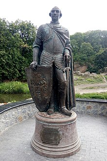

Флора
Тут росте понад 3300 видів дерев і кущів (місцевих і екзотичних), серед них: таксодіум (кипарис
болотний),
сосна
Веймутова, тюльпанне дерево, платан, гінкго та багато інших. Колективом парку видано каталог рослин, в
якому
нараховується 1994 таксони, з них 1220 деревних і кущових порід та 774 трав'янистих рослин, в тому числі
25
таксонів
ліщини, 24 — буки, 41 — ялина, 44 — ялівці, 100 — ліан, 320 — троянд, 57 — рододендронів, 376 —
ґрунтопокривних та 98 —
квіткових рослин. Колекційний фонд парку в 2007 році нараховував 3323 таксонів, з них: 546 деревних, 1557
кущових, 115
ліан, 1212 трав'янистих рослин, з них 914 інтродукованих та 246 аборигенних.
Розташування
Парк розташований у північній частині міста Умань Черкаської області, обабіч річки Кам'янки, за адресою —
вулиця
Київська, 12-а. З 1980 року директором дендропарку є член-кореспондент НАН України, доктор біологічних
наук, професор
Іван Косенко.
Історія
арк «Софіївка» заснований у 1796 році власником міста Умані, магнатом Станіславом
Щенсним Потоцьким та
названий на честь
його дружини Софії Вітт-Потоцької. Автором топографічного й архітектурного проекту і керівником
будівництва парку було
призначено військового інженера Людвіга Метцеля. Парк будувався упродовж шести років, і був подарований
чоловіком Софії
Вітт-Потоцької у день її іменин.
Парк був створений у майже безлісій місцевості, розчленованій річкою Кам'янкою, балками та ярами, які
врізалися в
гранітове підложжя, що часто виходило на поверхню. При створенні парку вдало використано рельєф, але без
заздалегідь
наміченого плану. У процесі завершення робіт на окремих ділянках були висаджені місцеві та екзотичні
деревно-чагарникові
рослини, тоді ж були збудовані перші архітектурні споруди та прикрашено «Софіївку» скульптурою, переважно
античною.
Пам'ятник засновнику парку "Софіївка" Станіславу Потоцькому (1752-1805)
Головна композиційна вісь парку проходить по річищу Кам'янки, де споруджено ряд штучних басейнів та
ставів: Верхній —
понад 8 га, Нижній — близько 1,5 га та інші, водоспади (один з них 14 м висотою), шлюзи, каскади,
підземну річку Ахеронт
(завдовжки 224 м), водограї (найбільший — до 20 м) тощо. Також у «Софіївці» є чимало алей і ландшафтних
ділянок, таких
як: Єлисейські поля, Англійський парк, Мала Швейцарія, Партерний амфітеатр.
Парк прикрашають штучні скелі (Левкадська (Бельведерська), Тарпейська й інші), гроти (Венери, «Горішок»,
«Страху і
сумнівів» та інші), павільйони (Флори, Рожевий), альтанки, скульптури.
Завдяки компонуванню різних деревних порід, поєднанню їх з водоймами, скелями й архітектурними спорудами,
створено види
й перспективи різних планів (Головна алея, Англійський парк, Єлисейські поля та інші).
Софія Вітт
Коли Людвіг Метцель закінчив будівництво, в'їзд до парку був з боку оранжерей (тобто, з двору
сільськогосподарської
академії). Тоді приїздили в «Софіївку» на конях по теперішніх вулицях Тищика і Київській.
Польський письменник Станіслав Трембецький у 1806 році присвятив парку поему «Zofiówka», яку сьогодні
було перекладено
на англійську мову.

Царицин сад
У 1832 році, після
польського повстання, частина правобережних володінь родини Потоцьких[1], а серед них
і Уманські
землі з парком «Софіївкою», були конфісковані
й передані Київській державній палаті[2]. Того ж року
Микола І подарував
Уманський парк своїй дружині — Олександрі Федорівні.
В 1836 — 1859 роках «Софіївка» перебувала у віданні Управління військових поселень. Протягом цього часу
парк зазнає
значних змін, супроти того, що зробив у ньому Людвіг Метцель з самого початку:
1838-го року виникла вулиця Садова. Вона з'єднала парк з містом.
Розширилася і була викладена бруківкою Головна алея, одночасно виводиться вода з центру парку до
Головного входу.
1844 року тут будуються дві башти в готичному стилі, які за вказівкою Миколи I, який побував тут у 1847
році, були
знесені, а замість них під керівництвом уманського архітекта Макутіна за проектом
архітектора А. І.
Штакеншнейдера
спорудили в 1850—1852 роках башти в античному стилі.
На терасі Муз засипають грот Аполлона і встановлюють обеліск «Орел».
В 1841 році побудовано альтанку «Грибок» та Китайську альтанку.
У 1842 — 1845 роках за проєктом архітектора Раппонета будується Павільйон Флори.
В 1843 — 1845 роках на острові Анти-Цирцеї будується Рожевий павільйон.
Протягом цього часу з парку вилучають бюст Тадеуша Костюшка та скульптуру Юзефа Понятовського. У цей
період «Софіївка»
називається «Царициним садом».
Садівниками на той час були П. Ферре, який створив терасу на березі Нижнього ставу в 1840 році і терасу
Муз на
північному березі біля джерела Гіппокрени, і Босеє, який відкрив дальню перспективу з амфітеатру на
Нижній став,
зрізавши верхівки кількох дерев.
Державний заповідник
Державний заповідник
Постановою Раднаркому УРСР за N26/630 від 18 травня 1929 року «Софіївка» була оголошена державним
заповідником.
Оранжерея, парники і, відповідно, частина території парку залишилися в підпорядкуванні
сільськогосподарського
університету. Парку надається самостійний статус і він аж до 1955 року перепідпорядковується кілька разів
різним
відомствам, таким як Наркомос, Наркомзем, управлінню заповідників, управлінню у справах архітектури, які
були створені
при Раді народних комісарів тодішньої УРСР.
1945 року — парку дано повну назву: «Уманський державний заповідник „Софіївка“».
У 1946 році Рада Міністрів УРСР прийняла спеціальну постанову «Про відновлення і благоустрій Уманського
державного
заповідника „Софіївка“». На ремонт і реставрацію парку виділяється 1 мільйон карбованців.
1948 року — затверджується генеральний план відновлення і розвитку заповідника «Софіївка».
1949 року — створюється декоративний розсадник на площі 20 га. Активно проводяться роботи з ремонту і
реставрації малих
архітектурних форм, дорожньо-алейної системи, скульптур парку. Проводиться інвентаризація деревних і
чагарникових порід,
з'являються наукові праці з історії парку, його дендрофлори, про скульптури, малі архітектурні форми. В
цей же період
втрачено оригінали мармурових скульптур Аполлона Бельведерського, Венери-купальниці, Меркурія, з яких
залишилися копії в
органічному склі, а статуя Амура, як і бюст Станіслава Трембецького, безслідно зникли, хоч пізніше
знайдено мармурові
крильця від статуї Амура, які зараз містяться в музеї.
Відновлення
Найбільші реставраційні, ремонтні та відновлювальні роботи в «Софіївці» було проведено після стихійного
лиха в 1980
році, коли за чотири місяці було реставровано понад п'ятдесят об'єктів. За період з 1980 по 1993 рік за
проєктом Є.
Лопушинської упорядковано Ахеронтійське озеро, збудовано альтанку Грибок. Починаючи з 1980 року, почала
освоюватися
територія колишньої військової частини площею 5,1 га, де організовується адміністративно-господарча зона
парку. Тут
практично заново відбудовується 25 гаражів для автомобілів, тракторів і старовинних карет, які
закуповуються в Польщі.
Було капітально відремонтовано пункт технічного обслуговування техніки, добудовується невеликий
лабораторний
корпус з
кімнатами для приїжджих. На базі колишніх складів боєприпасів, де під час війни німцями був влаштований
шпиталь для
радянських військовополонених з Уманської ями, збудовано бібліотеку з читальною залою, їдальню для
робітників та
службовців з кімнатою відпочинку, зала засідань на 90 місць, складські приміщення, у 1996 році
газифіковано
котельню,
побудовано водонапірну башту, куди подається вода із свердловини, пробуреної в західній частині парку.
Збудовано
пилораму, столярний цех, сауну, приміщення для утримання коней, овець, птиці. З 1993 року парк
охороняється
підрозділом
З 1991 року парку надається статус самостійної науково-дослідної установи НАН України.
З 1991 року парку надається статус самостійної науково-дослідної установи НАН України.
У 1995 році «Софіївка» брала участь в міжнародній конференції «Європа Ностра» і отримала всі відзнаки:
медаль, диплом і
барельєфну дошку за відновлення парку після стихійного лиха 1980 року, а також за збереження пам'яток
історії та
культури.
До 200-річчя заснування парку в 1996 році відновлено дію джерела «Залізна рура», повернуто його історичну
назву. Вода
цього джерела надходить, як і 200 років тому, з центральної частини парку із грота «Діани». При вході на
територію парку
з вул. Садової, зліва, зразу ж за вхідною баштою, розташована гірка, обсаджена ялівцями, туями та
ялинами. В цій гірці
ще тоді було влаштовано басейн, з якого, як і тоді, так і тепер поступає вода до «Залізної рури» та
водоспаду з
маленьким блюдцем води, збудованих за проєктом архітекторів інституту «УкрНДІІнжпроект» В. Б. Харченка та
О. П.
Гуменного. Цього ж року Національний банк України випустив ювілейну монету номіналом у 2 гривні,
присвячену 200-річчю
заснування парку.
28 лютого 2004 року Указом Президента України за № 249/2004 дендрологічному парку надано статус
національної установи, і
він став іменуватися Національний дендрологічний парк «Софіївка».
За період з 1980 до 2007 рік у «Софіївці» проведено значні обсяги робіт з реставрації, відновлення та
повернення
історичної достовірності майже на всій території історичного ядра парку. Зокрема:
проведено реконструкцію Головного входу, Партерного амфітеатру, Площі зборів, масиву Дубинка, окремих
об'єктів
Єлисейських полів, Арборетуму ім. В. В. Пашкевича;
реставровано обеліск «Орел», «Амстердамський шлюз», «Павільйон Флори», «Китайську альтанку», «Фазанник»,
«Ахеронтійське
озеро», підземну річку «Ахеронт» та «Рожевий павільйон»;
відновлено «Грот Аполлона» та інше;
у західній частині «Софіївки» на площі 53 га створено практично новий парк з вхідною зоною з вулиці
Київської, новою
інфраструктурою обслуговування туристів, розарієм та чотирма водоймами, органічно вписаними в ландшафт
тальвегу Грекової
балки.
Впродовж останніх років у «Софіївці» на підставі вивчення основних традиційних елементів теорії
декоративного
садівництва і використання відповідних композиційних прийомів та принципів проведено:
роботи з благоустрою і створення нових паркових композицій, які відповідають сучасним вимогам
садово-паркового
мистецтва;
створено «Меморіальну зону рослинних композицій, посаджених відомими людьми України та світу»;
проведено архівний пошук, за яким встановлено архітектурний задум будівничих та відновлено історичні
назви окремих
композицій та малих архітектурних форм на основі образів з поеми Гомера «Одіссея»;
проведено пошукові роботи та розроблено проєкти стабільного забезпечення гідрологічного режиму парку, на
сучасному рівні
розроблено концепцію благоустрою нової частини парку з розміщенням альпінаріїв, розаріїв, Японського саду
у пониззі
річки Кам'янки на базі наявного природного середовища з виходами гранітних скель;
завершено будівництво правого крила науково-лабораторного корпусу, в якому розміщено сучасний тризірковий
готель
«Софіївський».
Сучасна «Софіївка», бувши зразком садово-паркового мистецтва світового значення, маючи потужну
матеріальну базу та
високий науковий потенціал і розвинену інфраструктуру з обслуговування відвідувачів, може вже сьогодні
стати школою для
перепідготовки вітчизняних та закордонних ландшафтних архітекторів.